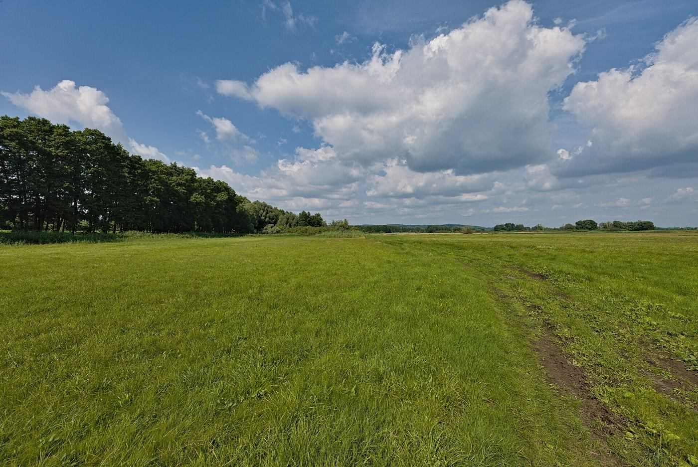
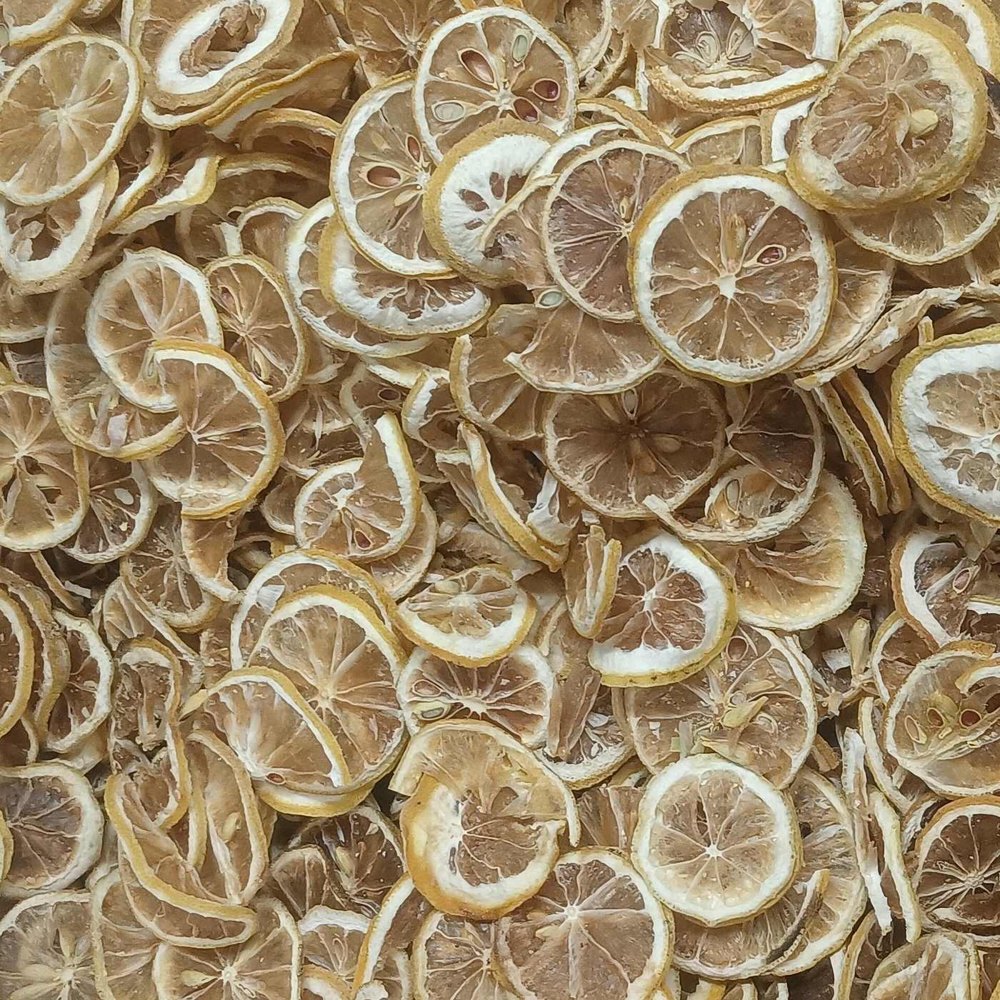

制作側の連想
シェービングブラシを、六つの部位に分けて
屋号の「ミラベル」から、制作側は、ふわりと泡立てる丸いブラシを思い浮かべてみました。毛先、毛束、口金、くびれ、握り、底。上の図は、その六つの部位の配置図です。制作側の連想で、お店の理念・由来とは無関係です。
ギャラリー(イメージ)
まずは、ひと息つく一枚から。



写真はフリー素材のイメージです。お店の様子や商品を示すものではありません。
六つの部位
ブラシの名前を、上から順に。
- 1
毛先ティップ
毛束の先端。泡をふくませ、ふわりと広がる側の端。
- 2
毛束ノット
たくさんの毛をひとまとめにした、ブラシのいちばん大きな部分。
- 3
口金ファーラル
毛束の根もとを締めて、柄にとめる金属の短い輪。
- 4
くびれネック
口金から握りへ、すっと細くなっていく首すじの部分。
- 5
握りグリップ
指でつまむ、ふくらみのある柄の本体。
- 6
底ベース
立てて置いたときに地面と触れる、平らな末端。



写真はお店のものではなく、国外または撮影地不明のフリー素材です。
ご案内
お店のこと(確認できたものだけ)
| 所在地 | 〒675-0163 兵庫県加古郡播磨町古宮1丁目5-49 |
|---|---|
| 電話 | 準備中 |
| 営業時間 | 準備中 |
| 定休日 | 準備中 |
| ご予約 | 準備中 |
| 駐車場 | 準備中 |
| SNS | Instagram @bakery_mirabelle_ |